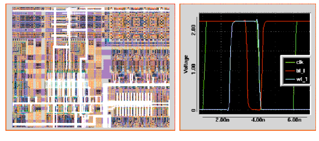

MCC MegaCell Compiler Tutorial |
Part 1
Mega Cell Compiler (MCC) Tutorial
- Welcome to the Micro Magic Tools MegaCell Compiler (MCC) tutorial. The MegaCell Compiler makes building all types of regular structures such as RAMs, Register Files, FIFOs, ROMs, and PLAs fast and easy.
MCC Features
- The following list describes the main features of MCC:
- Create user-configurable memories such as SRAMs, ROMs, CAMs, PLAs, DRAMs, FIFOs, and Pad Rings.
- Very fast execution.
- Fully-hierarchical relative tiling engine.
- Via programming by tracing wire paths, NOT by specifying coordinates.
- Automatic Verilog netlisting directly from layouts means time-consuming LVS is no longer required.
- Simple port propagation.
- Easy to make fully parameterizable megacells.
- Completely technology independent.
- Automatic extraction of critical path netlists.
- Automatic layout extraction of the critical path.
- Ability to interface to industry-standard verification tools.
- This tutorial walks you through exercises that highlight many of these features.
Figure 1: Micro Magic Tools MegaCell Compiler

Getting Started
- Before we get started, make sure someone has already installed MAX Layout Editor and MCC at your site. If you have purchased SUE Design Environment, make sure it is installed as well. We will use SUE and NST later in the tutorial.
- MCC is run from inside MAX.
- Although not needed for the tutorial, it would be helpful to have a SPICE simulator and a Verilog simulator installed.
Installing the MCC Tutorial
- To run the tutorials, you need to make a personal copy of the MCC tutorial example files using
mmi_tutorial.
- Make sure that the MCC tutorial is selected and then click on
Install Tutorial. The default installation directory ismmi_private/tutorialin your home directory. You can also select a different directory for installation. If the directory does not already exist, themmi_tutorialscript creates it. You can also usemmi_tutorialto reinstall a clean copy of the tutorial.
- Change directory (
cd) to the directory where you installed the tutorial. If you installed the tutorial in the default directory, type:cd ~/mmi_private/tutorial/mcc/max
- Otherwise, replace the above directory with the directory you specified. This directory contains files that you need to run the tutorial.
- This starts up MAX with the technology
mmi25(.25 micron MAX technology file). Notice that the MCC commands have been added to theToolmenu. Themc_initcommand in your.maxrcfile adds the MCC commands to theToolmenu in MAX. For clarity, all of the MCC commands are prefixed by the stringMC.
| ----- Micro Magic ----- |